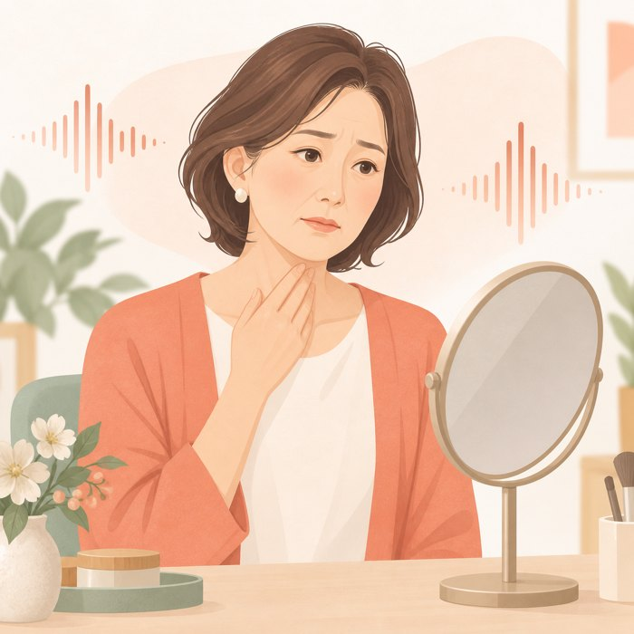
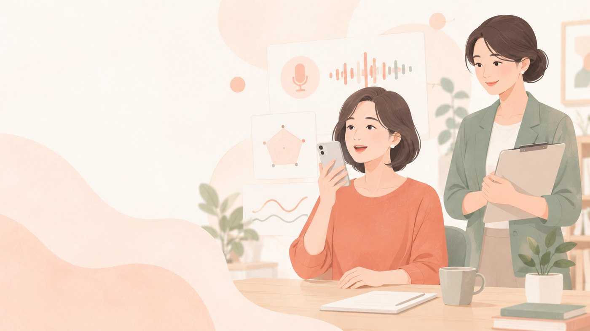
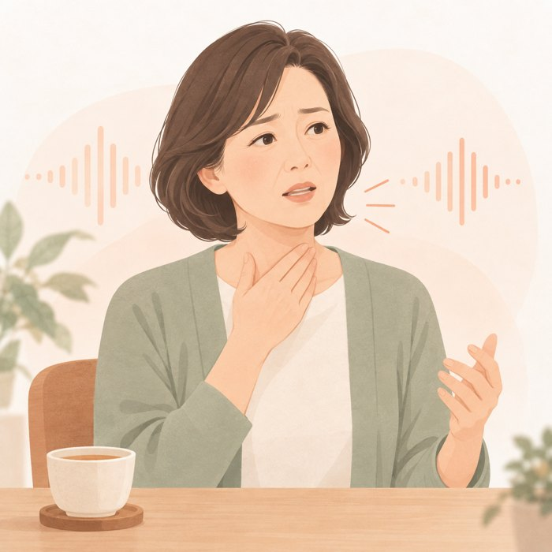

最近、声が老けてきた気がする。
こんな声だっけ？
声が老けた気がする。
喉に、なにか引っかかる感じがある。
あなたの声を、測ります。
年に1回の、声の総合健診です。


最近、声が老けてきた気がする。

喉に、なにか引っかかった感じで話している。
録音した自分の声を聞いて、「こんな声だったっけ」と思った。
気になってはいる。でも、どうすればいいか分からないまま、毎日その声で話しています。
自分の声のことを、じつは一番知らないのは自分です。
身体と同じで、声も放っておくと、気づかないうちに変わります。
ヨガや運動のように、ふだんの声に一度、意識を向ける。
スカッと声が出るのは、それだけで気持ちのいいものです。
声の人間ドックは、声を録って送るだけの総合健診です。
検査結果の数値と、20年聴いてきたわたしの耳で、あなたの声のいまを1枚のレポートにまとめます。
ボイストレーナーみか（ボイストレーナー歴20年目・Udemy講師）
※ 数値は、録音環境の影響を受けます。静かなところでの録音をおすすめします。
※ 本検査は医療機関の検査ではありません。喉の痛み・違和感が続く場合は耳鼻咽喉科の受診をおすすめします。
申し込む
受診キットが届く（録音の手順のご案内）
9月30日(水)までに録音を提出する
10月末までに、分析結果レポートが届く
12,800円 9,800円（年1回）
今年受診された方は、来年からもずっと9,800円です。
来年の新規受付は12,800円になります。
お支払いは毎年の自動更新です。次回の決済日の前日までに、いつでも解約できます。
レポートとは別に、「あなたの声の分析」を音声でお届けします。
Voicyでやっている「◯◯さんの声の分析」の、あなた版です。
5〜10分ほど、あなたの声について話した音声をお届けします。
Q. 受けたら声は良くなりますか？
A. 受けただけで良くなるわけではありません。ですが、改善点が見えます。今年の処方箋を1つお付けするので、取り組んでみてください。声は、変わっていきます。
Q. なぜ年に1回なのですか？
A. 健康診断と同じ形にしています。声は1年でも変わります。だから毎年、同じ条件で測るのがおすすめです。1年後にもう一度録ると、その1年で何が変わったかが見えます。
Q. 録音がうまくできるか不安です
A. 受診キットの手順どおりに録って送るだけで大丈夫です。上手に話す必要はありません。ふだんの声を聴かせてください。